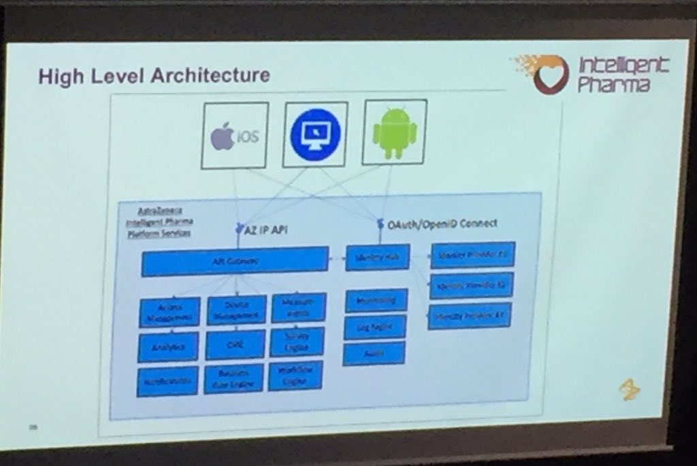

January 2016
Last #cadec2016 presentation: Björn Beskow introduces @kubernetesio New stuff for me so this looks like a good read googlecloudplatform.blogspot.se/2015/01/everyt…
Cool - @AstraZeneca's IntelligentPharma architecture use of #Docker and #SpringCould mentioned at #cadec2016

Fika and now #microservices and #docker at #cadec2016 nice blog series: Building microservices callistaenterprise.se/blogg/teknik/2…
Revisiting #webcomponents and #jsonld blog post while listening to 2nd #cadec2016 presentation developers.google.com/web/updates/20…
This afternoon I'm attending #cadec2016 callistaenterprise.se/event/cadec/20… kicking off with #GraphQL and #ReactJS with @maitriyogin
Enrolled to this MOOC. Probably to advanced for me but will try to follow. twitter.com/googleresearch…
Bookmarked: "Enhanced reproducibility of SADI web service workflows with Galaxy and Docker." on CiteUlike ift.tt/1K4E5lu
Looking for corporations with data.corp.com | open.corp.com | developer.corp.com landning page for #opendata #API
First MOOC in @Columbia Statistical Thinking for #DataScience & Analytics XSeries ow.ly/VGuOg done, next on is about ML
Even better: csv and json joined with metadata: #csvw w3.org/2013/csvw/ and #jsonld json-ld.org twitter.com/snaplogic/stat…
Looking for experiences of applying #LinkedData principles assigning URIs to documents in FirstDoc.Ping @CSCHealth @lisapettigrew @ngillen
Yes! And every company need have a plan for how to provide #LInkedData via API using e.g #jsonld twitter.com/nordicapis/sta…
Could a short terrm / interim option be: xrefs/lockup tables published as #opendata #linkeddata and donated to @opentrials ?
Long term; "(id) Things not only (text) Strings" in eg CT.gov See kerfors.blogspot.se/2015/02/clinic… @opentrials #opendata #linkeddata
Trial id lockup table example: <nct:NCT02491944> <owl:sameAs> <azt:D5160C00020> #opentrials #opendata #linkeddata
.@opentrials want lockup tables btw public trial registry and internal industry ids as a dataset and document "zipper" #opendata #linkeddata
@strataconf @joe_hellerstein @bigdata Checkout @w3c metadata and provenance standards: w3.org/2013/csvw and w3.org/standards/tech…
Bookmarked: "OpenFDA: an innovative platform providing access to a wealth of FDA’s publicly available data" on Cit… ift.tt/1O556nc
Added @egonwillighagen's and @jamesmalone's great blog posts summarizing the #swat4ls conference to my notes storify.com/kerfors/swat4l…
@egonwillighagen Added your great blog posts to my #Storify story from the SWAT4LS 2015 event in early Dex last year sfy.co/e0qRB
@jamesmalone Added your great blog posts to my #Storify story from the SWAT4LS 2015 event in early Dex last year sfy.co/e0qRB
Nice appetizer by @NovasTaylor FDA/PhUSE Computational Science Symposium workshop Semantic Technology 101 for Pharma youtu.be/4JgTzZGRrKY?t=…